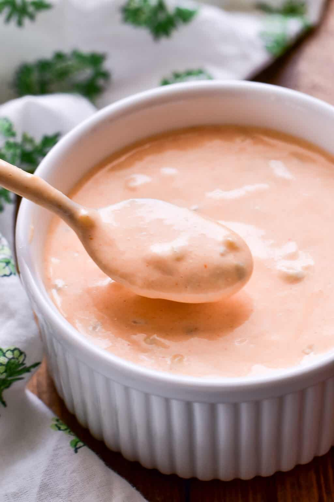

Big Mac Sauce

Description
Sweet, Spicy, Decadent Sauce similar to McDonalds Big Mac Sauce
Ingredients
- Mayo
- Ketchup
- sugar
- Garlic Powder
- Onion Powder
- Peprika
Steps
- add 30g of Mayo, 30g of Ketchup
- add two tablespoons of sugar garlic and onion powder
- Finish with three table spoons of Peprika
- mix everything together until smooth consistency